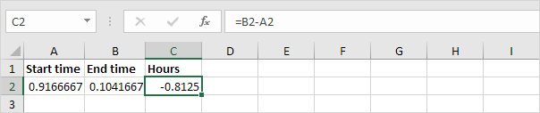

Perbedaan waktu
Rumus Sederhana | Rumus Selisih Waktu | Selisih Waktu dalam Jam sebagai Nilai Desimal | Lembar Waktu
Menghitung perbedaan antara dua kali di Excel bisa jadi rumit. Waktu ditangani secara internal sebagai angka antara 0 dan 1.
Rumus Sederhana
Mari kita mulai dengan rumus sederhana yang menghitung selisih antara dua waktu di hari yang sama.
-
Cukup kurangi waktu mulai dari waktu akhir.

Catatan: AM digunakan untuk waktu malam dan pagi hari. PM digunakan untuk waktu pada sore dan malam hari. Ubah
format Waktu untuk menampilkan waktu dengan atau tanpa AM/PM.
-
Ubah format angka nilai di sel A2, B2 dan C2 menjadi Umum.

Catatan: waktu ditangani secara internal sebagai angka antara 0 dan 1. Misalnya, pukul 06:00 direpresentasikan sebagai 0,25 (seperempat sepanjang hari).
Rumus Perbedaan Waktu
Rumus sederhana yang ditunjukkan di atas tidak berfungsi jika waktu mulai sebelum tengah malam dan waktu berakhir setelah tengah malam.
-
Waktu yang negatif ditampilkan sebagai ######.

-
Untuk melihat ini dengan jelas, ubah format angka dari nilai di sel A2, B2 dan C2 ke Umum.

-
Rumus perbedaan waktu di bawah ini selalu berhasil.

Penjelasan: jika waktu akhir lebih besar atau sama dengan waktu mulai, cukup kurangi waktu mulai dari waktu akhir. Jika tidak, tambahkan 1 (hari penuh) ke waktu akhir untuk menunjukkan waktu pada hari berikutnya dan kurangi waktu mulai.
Perbedaan Waktu dalam Jam sebagai Nilai Desimal
Untuk menghitung selisih antara dua kali dalam jam sebagai nilai desimal, kalikan rumus sebelumnya dengan 24 dan ubah format angka menjadi Umum.
Rumus di bawah ini berhasil.

Lembar Waktu
Hitung total jam, jam reguler, dan jam lembur dengan kalkulator absen kami.